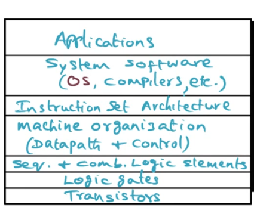
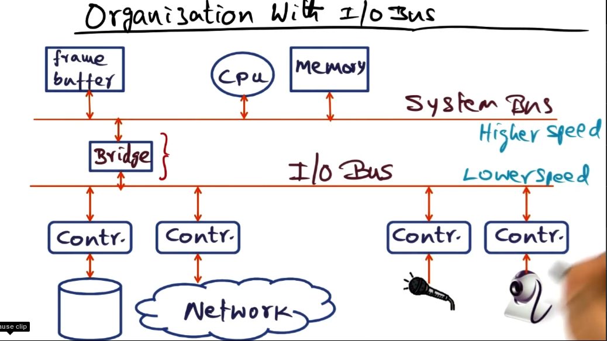
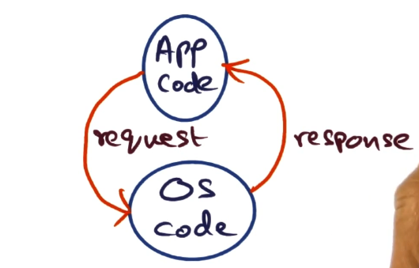
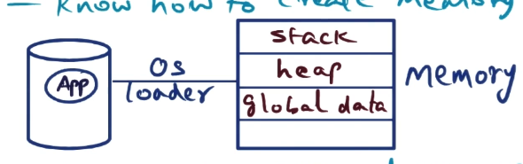

AOS Lecture Notes - Lesson 1 - Introduction to AOS
Principle of Abstraction
Introduction
- Most computers will have multiple applications open. How do they all work together?
- OS’s have evolved over time. We will see some of how the current state of the art has come about.
- Abstractions!
- hardware resources
- OS functionality
- OS abstractions
- By end of the lesson, we will be ready to discuss the primary OS abstractions
-
Lots of review of basics OS stuff. Going to omit many of these slides from notes
- Abstraction is an interface that allows us to hide all the details
The power of abstractions
- Google Earth, at some level, is electrons and holes.
- An ascending list of all the abstractions might be:
- Transistors
- Logic Gates
- Sequential and combination logic elements
- machine organization (data path and control)
- Instruction set architecture
- abstraction defined by a processor (Intel Inside, yo)
- System software
- OS, compilers, etc
- Applications
- high level language that leverages all lower layers
- Application is written at the top of the hierarchy, and traverses the stack below it. The stack below it provides all it needs for successful and safe execution
- 
Hardware Resources
- OS role is to control access to the physical hardware
- Hardware ranges from smartphone to cloud servers, but really they’re all pretty similar in terms of internal organization
- same for all manifestations
- CPU is connected by a conduit we call the Bus
- Memory has instructions and data needed for CPU to execute. CPU uses Bus to access memory
- Storage is needed for persistence of files, and other data. Also accessed by CPU via a Controller, attached to the Bus
- Peripherals such as mic/keyboard/etc all accessed via Controllers attached the Bus
- Network is interfaced through Controller/Bus, same as everything else
- Bus is a conduit for communication, serves the purpose of connecting CPU to other components
- Depending on sophistication/speed of device may have various other capabilities
- e.g. network or storage may access memory directly (DMA)
- Second example given, with a system bus in addition to the IO bus
- System bus is for synchronous communication between CPU and Memory
- IO bus is for the devices to communicate with the CPU
- The intent is that the individual needs of these devices is less than the cumulative bandwidth for the CPU to communicate with the memory. System bus > IO bus
- System bus connects via a bridge to the IO bus
- Bridge is a specialized IO processor for scheduling the devices to communicate with the memory (DMA) or the CPU
- Other high end devices, such as frame buffer for a graphics display, that may hang off the system bus to take advantage of its high-speed nature
- 
- same for all manifestations
OS Functionality
- Section begins with a ‘quiz’ that lists some of the functionalities provided by an OS
- OS is a resource manager
- OS provides a consistent interface to the hardware resources (CPU, memory, etc)
- OS schedules applications on the CPU
- What is an OS?
- Protected access to hardware resources
- Arbitrates among competing requests
- 
- OS provides well defined APIs for accessing hardware resources managed by the OS
- resources are provided as services
- applications make requests for resources to the OS
- services are provided as responses to those API calls
- What happens when you click the mouse on your computer?
- It generates a CPU interrupt
- using an interrupt line, one of the lines on the bus
- CPU is running whatever else. An interrupt is a hardware mechanism for alerting the processor that something external requires the attention of the CPU. OS fields the interrupt.
- OS schedules itself to run on the CPU to handle the interrupt, figures out what its intended for, and passes it to the intended recipient program for action.
- It generates a CPU interrupt
Managing the CPU and Memory
- Recall the initial imagery from beginning of this lecture, where a computer is running multiple apps seemingly simultaneously, and all of them must play nicely with each other.
- OS must protect these applications from one another and themselves, while staying out of the way as much as possible.
Catering to Resource Requirements
- Resource needs of applications
- cpu
- memory
- peripheral devices
- App launch time
- OS doesn’t know much about the app, but at least has enough information to create memory footprint
- this is provided by the OS loader
- 
- app asks for additional resources at runtime, OS will serve as broker for running applications
- OS doesn’t know much about the app, but at least has enough information to create memory footprint
Modern Operating Systems
- Program
- static image loaded into memory
- Process
- a program in execution
- program + state of the running program (which evolves as the program executes)
- in the simplest examples, there is a single thread of control coursing through the program
- However, picture two (or many) threads of control running parallel through the program
- The OS must arbitrate between competing requests from these threads
- Therefore a process = program + state of all threads executing in the program
- Memory related OS abstraction
- address space for each process distinct from one another
- implement the abstraction using hardware capabilities